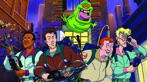

Os Jetsons encontram os Flintstones
Ano de Estreia: 1987
As famílias se encontram através de uma máquina do tempo, misturando o futuro tecnológico com a pré-história em aventuras inesperadas.

Caça-Fantasmas
Ano de Estreia: 1983
Um grupo de cientistas se une para formar uma equipe de caça-fantasmas, enfrentando entidades sobrenaturais e salvando Nova York de ameaças paranormais.

Tartarugas Ninjas
Ano de Estreia: 1987
Quatro tartarugas mutantes treinadas em artes marciais lutam contra o crime e defendem Nova York de vilões, enquanto vivem na esgoto da cidade.